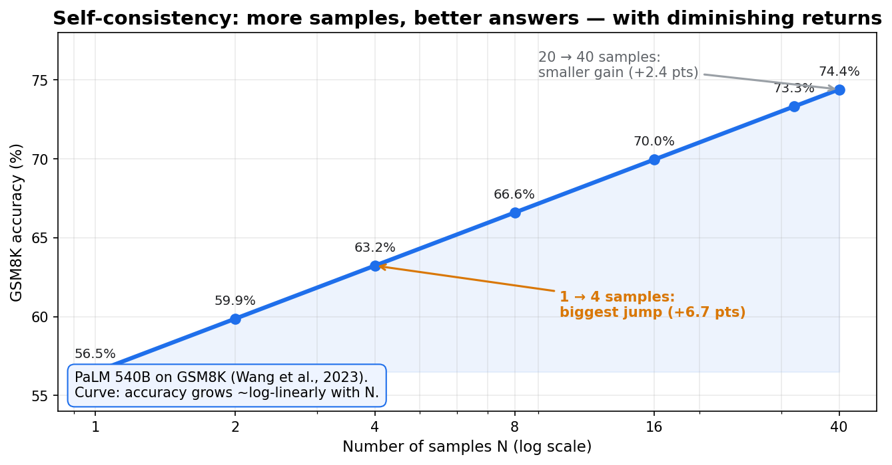
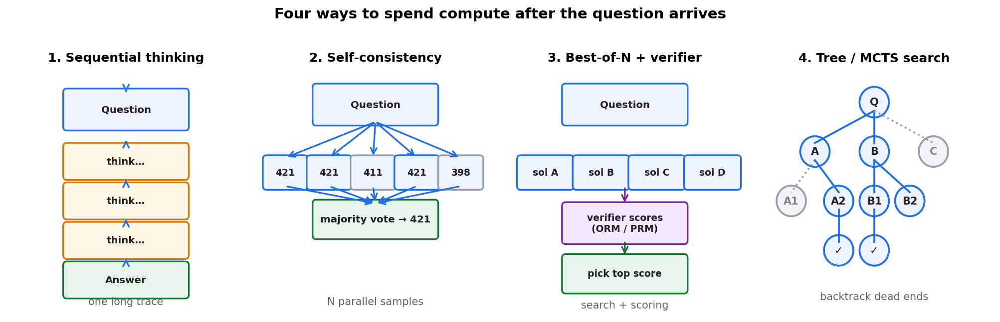
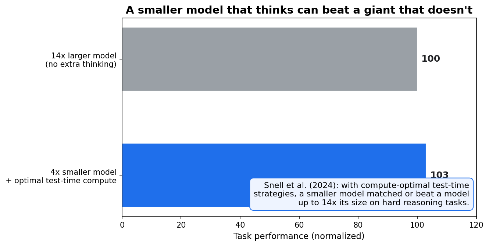
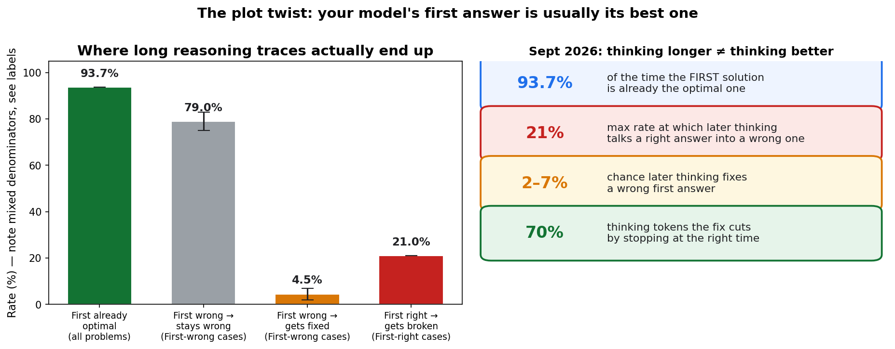

For a decade, making AI smarter meant one thing: train bigger. More data, more GPUs, more parameters — that was the entire playbook. Then researchers found a third axis nobody was fully exploiting: make the model think longer after the question arrives.
The payoff is absurd. A model 4x smaller, given the right thinking strategy, matched or beat a model up to 14x its size on hard reasoning tasks (Snell et al., 2024). You read that right: no extra training, no extra weights — just thinking.
This is test-time compute. It's the reason every flagship model released this month ships a "thinking" mode, and the reason September's smartest models are defined less by their parameter counts than by how they spend their time.
ELI5: studying vs. thinking during the exam
There are three ways to make someone smarter:
- Study longer before the test — pre-training. Years of school, trillions of words.
- Bring a bigger brain — parameters. More capacity to hold what was learned.
- Think longer during the test — test-time compute. Re-read the question, try two approaches, check your work.
For years, only (1) and (2) got funding. Then OpenAI's o1 showed that on math competitions, accuracy climbs roughly log-linearly with thinking tokens — and the whole industry pivoted. In 2026, reasoning isn't a special mode anymore. It's standard equipment: Claude Opus 5.5, GPT-5.6 Sol, Grok 4.7, DeepSeek-V4-Pro, Qwen3.8, GLM-5.3 — all "think first, then answer" by default.
How it works: four ways to spend compute after the question arrives

1. Sequential thinking (the long chain of thought). The model just… keeps writing before answering. Propose, reflect, backtrack, try again. Simple, and it's the foundation everything else builds on. The catch: a single reasoning request can now generate 16,000–128,000 internal thinking tokens before the final answer — 10–100x more tokens than the old one-shot models.
2. Self-consistency (majority vote). Ask N times, take the most common answer. On grade-school math (GSM8K), this lifted PaLM 540B from 56.5% to 74.4% — a 17.9-point gain from voting alone (Wang et al., 2023). It works when correct answers cluster together in output space. It costs N× compute for sublinear gains.
3. Best-of-N + verifiers. Sample N solutions, then have a verifier model score them and pick the best. Two flavors: outcome reward models (ORMs) score the final answer; process reward models (PRMs) score every intermediate step. PRMs beat outcome-only verification by 10–20% on math — because catching a wrong step is more useful than grading a wrong answer. Training them is expensive (PRM800K used ~800,000 human step-level labels), so automated PRM training is now an active research front.
4. Search (tree of thought / MCTS). Explore multiple reasoning paths, evaluate partial solutions, backtrack when stuck — the model as both explorer and judge. Most powerful for hard combinatorial problems, and the most complex to run.
The scaling law: a new axis, same diminishing returns
The empirical rule: quality ∝ (inference compute)^β, roughly log-linear. Doubling thinking tokens buys a reliable but shrinking accuracy gain. Typical best-of-N sweeps run N=4 to N=256, with most of the value captured by N=64.

The compute-optimal finding (Snell et al., 2024) is the one that reshaped budgets: on problems where the small model has a non-trivial baseline, a smaller model with the right test-time strategy beats a 14x larger model with a naive one. Two mechanisms drive it: searching against dense process verifiers, and adapting the strategy to the prompt's difficulty — easy problems get iterative refinement of one solution, hard problems get broad search.
The plot twist: thinking longer can make you dumber
Here's where September 2026 got interesting. New research on large reasoning models reached the opposite of the "more thinking is better" story:
- On hard benchmarks (AIME25, GPQA), the model's first solution is already the optimal one 93.7% of the time.
- When the first answer is wrong, later thinking fixes it only 2–7% of the time — most traces just stay wrong (75–83%).
- Worse: later thinking talks a correct first answer into a wrong one at rates up to 21%. The damage dwarfs the benefit.
- The fix — stopping the trace when it stops helping — cut token usage by up to 70%.

There's theory behind the damage. Bay & Yearick's "sampling ceilings" work shows test-time sampling is cluster sampling: attempts on one problem are correlated draws, so n samples buy only n/(1+(n−1)ρ) effective samples — capped at 1/ρ. And majority voting has a modal ceiling: where the model's most common answer is wrong, more samples sharpen the confident error. Coverage (getting one right answer for a verifier to find) keeps scaling; majority vote plateaus and can anti-scale.
The companion notebook reproduces all of this with exact binomial math: self-consistency 56.5% → 74.4%, coverage that never saturates, anti-scaling on wrong-mode problems, and a toy trace where taking the first answer beats taking the last.
SOTA, September 2026: the thinking leaderboard
The labs have turned these insights into product:
- xAI Grok 4.7 (Sept 2026): native sub-agent control tokens baked into the vocabulary — it bifurcates into parallel worker personas, writes its own test suites, then merges back. 62.4% on SWE-bench Verified, a new record, with deterministic compiler verification during test-time compute filtering out bad code before you see it.
- Anthropic Claude Opus 5.5 (Sept 22) / Fable 5.1 (Sept 1): adaptive thinking that allocates thought based on prompt perplexity instead of blindly burning VRAM. Opus 5.5 is the default recommendation; Fable 5.1 is for long-horizon agent work.
- OpenAI GPT-5.6 Sol: three decoupled thinking tiers (Fast/Advanced/Extreme) controlling N parallel sampling streams.
- DeepSeek-V4-Pro: GRPO reinforcement learning that deletes the memory-hungry critic network, plus compressed sparse attention shrinking reasoning KV caches by ~90%.
- Qwen3.8-2.4T-A95B (Aug 2026, open weights): 2.4T parameters, hybrid linear+full attention, 262K native context. Thinking mode is on by default; it samples thinking at temperature 1.0 (exploration where mistakes are cheap) but answers at 0.7 (where mistakes are terminal).
- Zhipu GLM-5.3: unified low/high/max reasoning effort, up to 128K output tokens and 1M context, reusing sparse attention indexes across MCTS + PRM verification.
- Moonshot Kimi K3: entropy-driven dynamic thinking budgets — a token watchdog that ends the search at the optimal confidence boundary.
The infra strain is real: reasoning turned serving clusters into memory-bandwidth machines (single-digit MFU), a single 64K-token trace can eat 18 GB of VRAM in KV cache, and long traces risk infinite backtracking loops. That's why the KV-cache compression race (DeepSeek's ~90%) matters as much as the models.
The practitioner's rule: spend thinking like money
The research consensus for 2026 is a budget, not a slogan:
- 60–70% of queries need minimal reasoning. Match effort to difficulty — that's what adaptive thinking and effort tiers (low/high/max) are for.
- Sample the thinking hot, answer cool. Exploration belongs in the trace; the final answer gets low temperature.
- Verify, don't just vote. Best-of-N with a PRM beats majority vote on hard tasks; coverage has no ceiling.
- Stop early. The first solution is usually the best; a stopping rule based on confidence can cut thinking tokens 70% with no accuracy loss.
Test-time compute didn't replace training scale — it added a third axis. The labs that win from here are the ones that don't just think longer, but think smarter about when to stop.
Takeaways
- Thinking longer is a real scaling law: log-linear accuracy gains with inference compute.
- Four levers: long CoT, self-consistency (+17.9 pts on GSM8K), best-of-N + PRM verifiers (+10–20%), tree search.
- Small + optimal thinking can beat 14x larger + naive thinking (Snell et al., 2024).
- The twist: first solutions are optimal 93.7% of the time; over-thinking flips right answers wrong (up to 21%) — stop early and save 70% of tokens.
- Sept 2026 SOTA: Grok 4.7 (62.4% SWE-bench), Claude Opus 5.5, DeepSeek-V4-Pro (GRPO, −90% KV), Qwen3.8 open weights, GLM-5.3 (128K reasoning tokens), Kimi K3 (entropy budgets).
- Notebook:
test_time_compute.ipynb— exact binomial demos of all four phenomena.